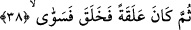

Bu âyette geçen “nutfe” az olsun çok olsun saf su demektir. “Menî” ise erkeğin ve
kadının suyudur. Yâni bu sudan herhangi bir canlı yaratılmamıştır. Hâmilelik ancak bu
iki suyun karışımından meydana gelir.
“Yumnâ/atılan” ifâdesi, “menî” kelimesinin sıfatıdır. Buna göre âyet-i kerîmenin
mânâsı; insan rahime akıtılan ve dökülen menînin içinden bir nutfe değil miydi?
“Yümnâ” kelimesindeki dökülme ve akıtılma anlamından dolayı Mekke yakınlarındaki
kurban kesilen mahalle bu kökten türeme olarak “mina” adı verilmiştir. Çünkü oraya
hacılar tarafından kesilen kurbanların kanları dökülmektedir. Bütün bunların ışığı
altında âyet-i kerîmeye mânâ vermek gerekirse; insan değersiz, tiksinti veren az bir
sudan ibâret değil miydi? Bu nedenle insan az bir sudan ibâret olduğu için âyette yer
alan “nutfe” kelimesi ile “menî” kelimeleri nekre olarak getirilmiştir. Allah bu
ifâdesiyle ilkin insanın değersizliğine ve ikinci olarak da kendisinin kudretinin kemaline
dikkatleri çekmektedir. Çünkü böylesine basit bir su parçasını, düzgün, organları tam
bir insan hâline getirmiştir.
Bilginlerden birisi âyet-i kerîmede yer alan “yumnâ/akıtılan” kelimesinin insanın ne
kadar hakir ve aşağılık bir hâlde olduğuna işâret etmek için getirildiğini söylemiştir.
Burada sanki şöyle denilmektedir: İnsanoğlu necaset çıkan bir yere akıtılan menîden
yaratılmıştır. Böyle bir varlığın Allah’ın emrettiği ve yasakladığı hususlarda O’na itâat
etmeyip isyânda bulunması Allah’a karşı gelmesi ona nasıl yakışır? Ancak Allah Teâlâ
bu mânâyı bizim ifâde ettiğimiz gibi açıktan açığa değil, semboller kullanmak sûretiyle
ifâde etmiştir. Nitekim Allah’ın asıl gâyesi Hz. İsa ve Meryem’in tuvâlete gittiklerini,
öteki insanlar gibi büyük abdestlerini yaptıklarını ifâde etmek iken O yine bu gerçeği
semboller kullanmak sûretiyle bizlere ifâde etmiştir. Nitekim söz konusu olgu âyet-i
kerîmede ifâdesini şöyle buluyor: “Meryem oğlu Mesih ancak bir rasûldür, ondan
önce de (birçok) rasûller gelip geçmiştir. Anası da çok doğru bir kadındır. Her ikisi
de yemek yerlerdi.” (el-Mâide, 5/75)
38. Sonra bu, alaka (aşılanmış yumurta) olmuş, derken Allah onu (insan
biçiminde) yaratıp şekillendirmişti.
“Sonra o” menî beyaz iken, kırk gün sonra Allah’ın kudreti ile “alaka (aşılanmış
yumurta)” kırmızı, donuk, katı bir kan pıhtısı oldu. “Derken Allah onu (insan
biçimine) koydu.” Nitekim aynı gerçeği Allah bir başka âyet-i kerîmede şöyle ifâde
buyuruyor: “Sonra nutfeyi alaka (aşılanmış yumurta) yaptık.” (el-Mü’minûn, 23/14)
Bu üzerinde durduğumuz âyet-i kerîme “sonra o bir kan pıhtısı oldu” ifâdesi az önce
geçen “elem yeku/o akıtılan meninin içinden bir nutfe değil miydi?” âyeti üzerine
mâtuftur. Çünkü insanın atılan menîden bir nutfe olduğunu kabul etmek, onu o hâle